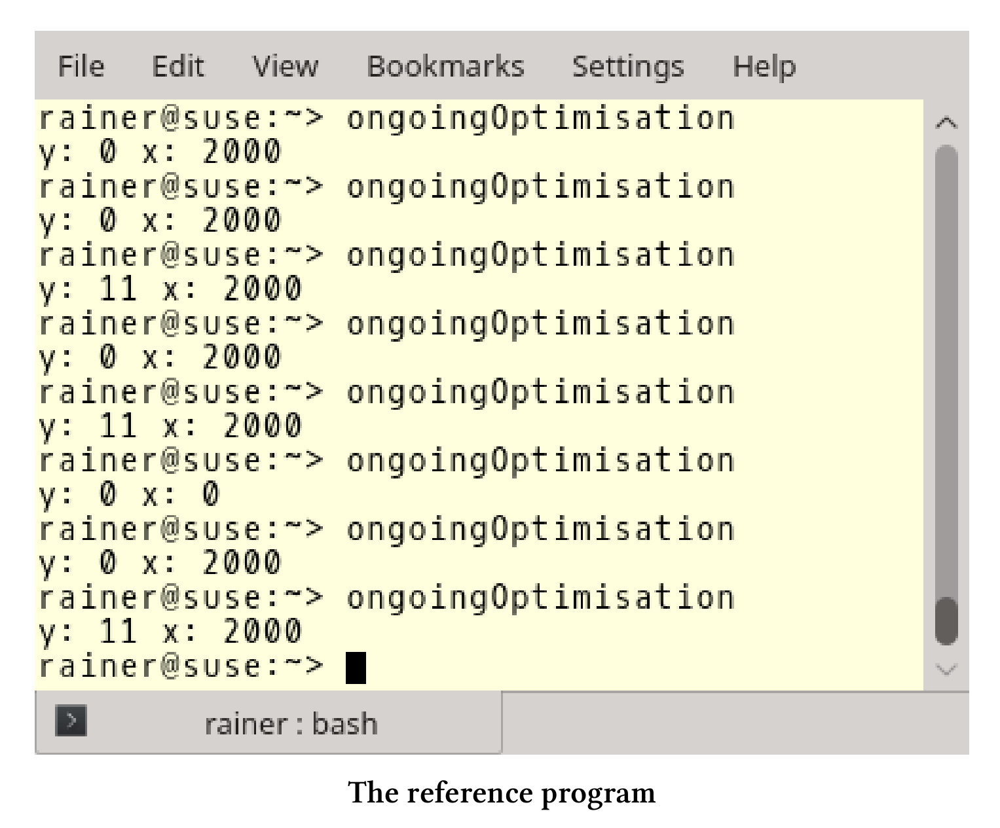
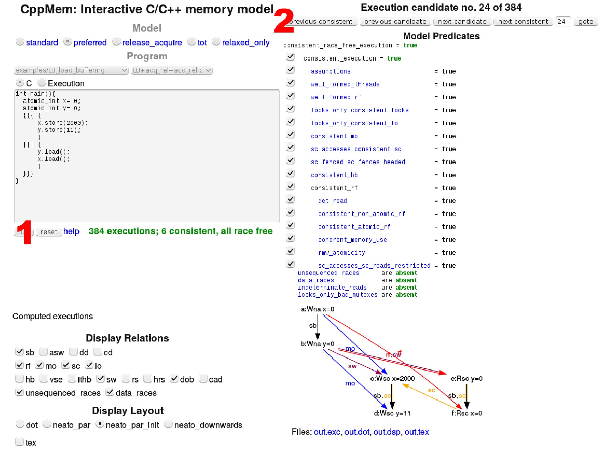
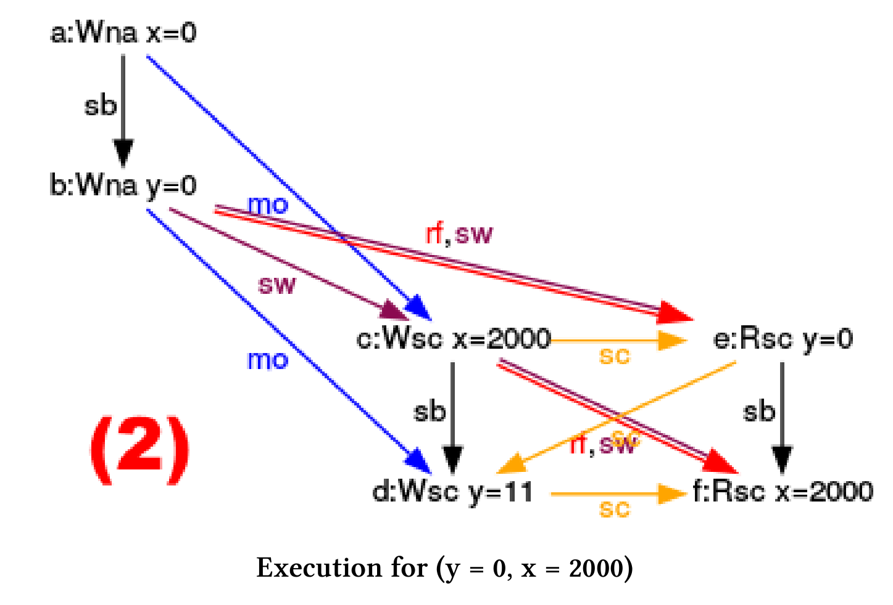
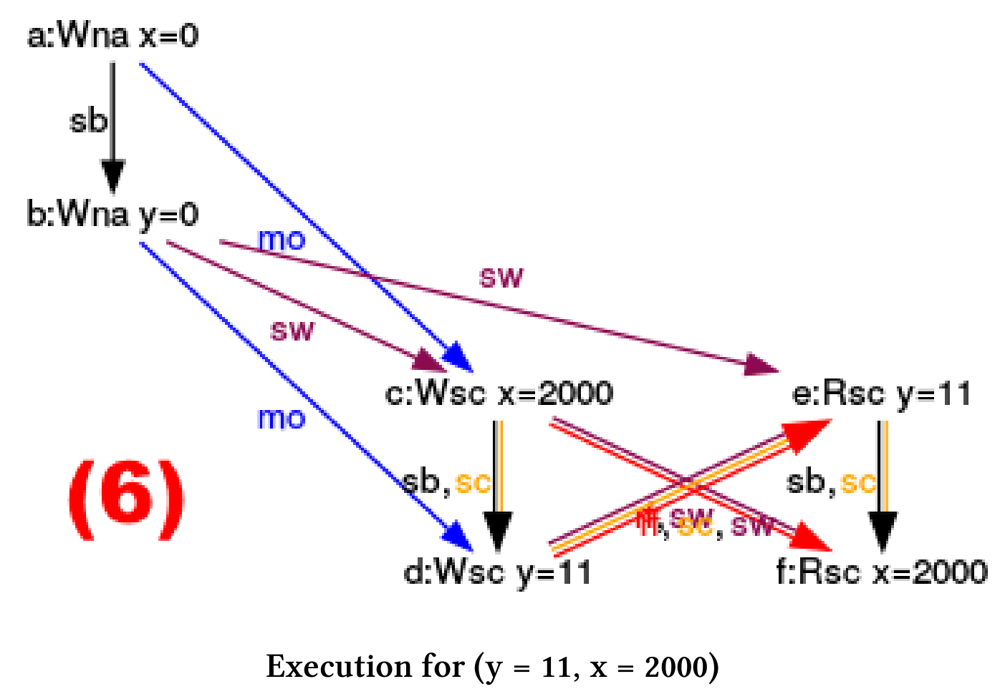
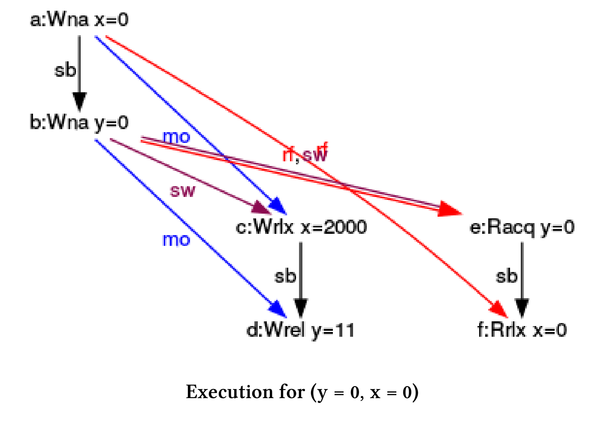
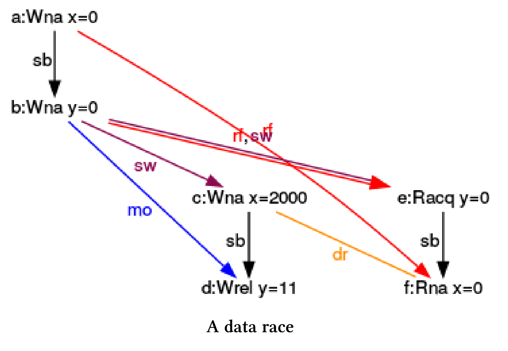

使用CppMem进行优化
我们从一个简单的程序开始，然后对其不断地进行改进。这里，使用CppMem验证的每个步骤。CppMem是一个交互式工具，用于研究小代码段中C++内存模型的行为。
首先，来写个简单的程序：
// ongoingOptimisation.cpp
#include <iostream>
#include <thread>
int x = 0;
int y = 0;
void writing() {
x = 2000;
y = 11;
}
void reading() {
std::cout << "y: " << y << " ";
std::cout << "x: " << x << std::endl;
}
int main() {
std::thread thread1(writing);
std::thread thread2(reading);
thread1.join();
thread2.join();
}
程序很简单，由两个线程thread1和thread2构成。thread1写入x和y，thread2以相反的顺序读取值y和x。这看起来很简单，但这个简单的程序，却会给了我们三个不同的结果:

对程序优化之前，需要确定两个问题：
- 程序的定义都明确吗？是否存在数据竞争？
- x和y可能是哪些值?
第一个问题往往很难回答。首先，考虑第一个问题的答案；其次，使用CppMem验证推理。当我想到了第一个问题的答案，就可以很容易地确定第二个问题的答案。我在一个表中给出了x和y的可能值。
但是，还没有解释持续优化是什么意思。其实很简单，通过弱化C++的内存序来不断优化程序。以下是优化步骤：
- 非原子变量
- 锁
- 使用顺序一致语义的原子变量
- 使用获取-释放语义的原子变量
- 使用自由语义的原子变量
- Volatile变量
开始持续优化之旅之前，应该先对CppMem有一个基本的了解。在CppMem章节中，会提供了一个简单的介绍。
CppMem: 非原子变量
使用run按钮可以立即显示数据竞争。更准确地说，上面的程序有两个数据竞争，因为变量x和y的访问都不受保护。因此，该程序具有未定义行为。在C++术语中，这意味着程序在玩火，你的电脑甚至会着火(笑)。
因此，我们不能得到x和y的准确值。
关于int型的变量
只要int变量是自然对齐的，那么大多数主流架构对int变量的访问都是原子性的。自然对齐意味着在32位或64位体系结构中，32位int变量必须有一个能被4整除的地址。这是因为，C++11中可以调整数据类型的对齐方式。
必须强调的是，我并不是建议你像使用原子int那样使用int型变量。我只是想指出，在这种情况下，编译器比C++11标准提供了更多保证。如果过于依赖于编译器，那么程序就很可能不符合C++标准，因此可能会在其他硬件平台上运行出错。
这就是我的推理内容。现在，我们应该看看CppMem关于程序未定义行为的报告。
CppMem允许我将程序剪裁到最小。
int main() {
int x = 0;
int y = 0;
{ { { {
x = 2000;
y = 11;
}
|||{
y;
x;
}
} } }
}
可以使用大括号(第4行和第12行)和管道符号(第8行)在CppMem中定义一个线程。因为我对变量x和y的输出不感兴趣，所以只在第9行和第10行读取它们。
这是CppMem的理论部分，下面就来实践一下。
分析
执行程序时，CppMem会在(1)处提示，线程交错有四种可能性，其中有一种有竞争的。只有在第一次执行时，结果是一致的。现在，我可以使用CppMem在四个执行(2)之间进行切换，并分析示意图(3)。

通过分析图表，可以最大程度地利用CppMem。
第一次执行

节点表示程序的表达式，箭头表示表达式之间的关系。从图中的注释中我可以得出什么结论呢?
- a:Wna x = 0：第一个表达式(a)，向非原子变量x中写入0。
- sb (前序，sequenced-before)：第一个表达式(a)执行的顺序在第二个表达式(b)之前就能确定。表达式(c)和(d)、(e)和(f)之间也存在这种关系。
- rf (读取，read from)：(e)从(b)中读取y的值，(f)从(a)中读取x的值。
- sw (同步，synchronizes-with)：因为表达式(f)在一个单独的线程中执行，所以(a)与(f)同步。线程创建之前发生的所有事情都是可见的，而线程的创建可以看作是一个同步点。由于对称性，(b)和(e)之间也存在同样的关系。
- dr (数据竞争，data race)：变量x和y的读写之间有数据竞争，所以程序有未定义行为。
为什么顺序一致的执行?
因为x和y在主线程中初始化(a)和(b)，所以执行顺序一致。(c)和(d)中的x和y在内存模型上不是顺序一致的。
接下来的三次执行，都不是顺序一致的。
第二次执行

(e)从(d)中读取“不一致”的y值，并且(d)的写入与(e)的读取同时发生。
第三次执行

与前一个执行对称，(f)同时从(c)中读取x。
第四次执行

现在，就开始乱套了。(e)和(f)同时从表达式(d)和(c)中读出x和y。
简单的总结一下
虽然我只是使用了CppMem的默认配置，但是获得了很多有价值的信息。特别是CppMem的图形化显示：
- x和y的所有可能的组合：(0,0)、(11,0)、(0,2000)和(11,2000)。
- 该程序至少有一个数据竞争，因此会触发未定义行为。
- 四种可能的执行方式中，只有一种是顺序一致的。
使用volatile
从内存模型的角度来看，对x和y使用限定符volatile与x和y的非同步访问没有区别。
CppMem: 使用volatile的不同步访问
int main() { volatile int x = 0; volatile int y = 0; { { { { x = 2000; y = 11; } ||| { y; x; } } } } }CppMem生成与前一个示例相同的图。原因很简单，C++中volatile不具备多线程语义功能。
这个例子中，x和y的访问没有同步，因此会出现数据竞争，产生未定义行为。最直接的同步方式，当然是使用锁。
CppMem: 锁
两个线程thread1和thread2都使用了相同的互斥锁，且包装在std::lock_guard中。
// ongoingOptimisationLock.cpp
#include <iostream>
#include <mutex>
#include <thread>
int x = 0;
int y = 0;
std::mutex mut;
void writing() {
std::lock_guard<std::mutex> guard(mut);
x = 2000;
y = 11;
}
void reading() {
std::lock_guard<std::mutex> guard(mut);
std::cout << "y: " << y << " ";
std::cout << "x: " << x << std::endl;
}
int main() {
std::thread thread1(writing);
std::thread thread2(reading);
thread1.join();
thread2.join();
}
程序没啥问题，根据(thread1与thread2)执行顺序，要么是读后写，要么是先写后读。下面展示了x和y值的几种可能：
| y | x | 有可能吗？ |
|---|---|---|
| 0 | 0 | 有 |
| 11 | 0 | |
| 0 | 2000 | |
| 11 | 2000 | 有 |
CppMem中使用
std::lock_guard我没找到在CppMem中使用
std::lock_guard的方法。如果你知道如何实现它，请告诉我一下 ：）
锁的易用性比较好，但同步性价比太低。接下来使用原子变量，并尝试一种更轻量级的策略。
CppMem: 顺序一致语义的原子变量
如果没有指定的内存序，则使用顺序一致。顺序一致保证每个线程按照源代码顺序执行，并且所有线程都遵循相同的全局序。
这里有个使用原子的优化版本。
// ongoingOptimisationSequentialConsistency.cpp
#include <atomic>
#include <iostream>
#include <thread>
std::atomic<int> x{ 0 };
std::atomic<int> y{ 0 };
void writing(){
x.store(2000);
y.store(11);
}
void reading() {
std::cout << y.load() << " ";
std::cout << x.load() << std::endl;
}
int main() {
std::thread thread1(writing);
std::thread thread2(reading);
thread1.join();
thread2.join();
}
我们来分析一下这段代码。因为x和y是原子变量，所以没有数据竞争。因此，只剩下一个问题需要回答。x和y可能的值是什么？这个问题也不难，由于顺序一致，所有线程都必须遵循相同的全局序。
实际执行的情况：
x.store(2000);先行于y.store(11);std::cout << y.load() << " ";先行于std::cout << x.load() << std::endl;
因此，如果y.load()的值为11，则x.load()的值肯定不能为0，因为x.store(2000)在y.store(11)之前已经执行了。
x和y的其他所有值都是有可能，下面是导致x和y有三组不同值的原因：
thread1先行完成于thread2thread2先行完成于thread1thread1执行x.store(2000)先行于thread2执行完成
那么x和y的所有可能性：
| y | x | 有可能吗？ |
|---|---|---|
| 0 | 0 | 有 |
| 11 | 0 | |
| 0 | 2000 | 有 |
| 11 | 2000 | 有 |
接下来使用CppMem验证一下我的猜想。
CppMem
int main() {
atomic_int x = 0;
atomic_int y = 0;
{{{ {
x.store(2000);
y.store(11);
}
|||{
y.load();
x.load();
}
}}};
return 0; }
首先介绍一些语法知识，CppMem为std::atomic<int>专门定义有atomic_int类型。
执行程序时，我被候选执行程序的数量(384个)吓了一跳。

有384个可能的执行候选，只有6个是顺序一致的，没有候选有数据竞争。不过，我只对6个顺序一致的候选感兴趣。
我使用选项(2)获得六个带注解的示意图。
我们已经知道，因为顺序一致，除了y = 11和x = 0外，其他可能值都是可能的。现在我很好奇，哪些线程交错会产生不同的x和y呢?
(y = 0, x = 0)

(y = 0, x = 2000)



(y = 11, x = 2000)

分析还没结束，我感兴趣的是：指令序列与这六个图如何对应?
指令序列
我给每个指令序列分配了相应的图示。

让我们从简单的例子开始分析：
- (1)：x和y的值为0，因为
y.load()和x.load()在操作x.store(2000)和y.store(11)之前完成。 - (6): 所有的加载操作都发生在存储操作之后，所以y的值是11，x的值是2000。
- (2), (3), (4), (5): 这几个是更有趣的例子，y的值是0，x的值是2000。图中的黄色箭头(sc)是我推理的关键，它们代表指令序列。让我们看看(2)是怎么执行的：
- (2)中黄色箭头(sc)的顺序是：
写入x = 2000⇒读取 y = 0⇒写入 y = 11⇒读取 x = 2000。该序列对应于第二次线程交错(2)时的指令序列。
- (2)中黄色箭头(sc)的顺序是：
接下来，让我们打破顺序一致的束缚，使用获取-释放语义。
CppMem：获取-释放语义的原子变量
与线程之间进行同步的顺序一致不同，获取-释放语义的同步，发生在同一原子变量的(原子)操作之间。基于这个前提，获取-释放语义更轻，也更快。
展示一段使用获取-释放语义的代码。
// ongoingOptimisationAcquireRelease.cpp
#include <atomic>
#include <iostream>
#include <thread>
std::atomic<int>x{ 0 };
std::atomic<int> y{ 0 };
void writing() {
x.store(2000, std::memory_order_relaxed);
y.store(11, std::memory_order_release);
}
void reading() {
std::cout << y.load(std::memory_order_acquire) << " ";
std::cout << x.load(std::memory_order_relaxed) << std::endl;
}
int main() {
std::thread thread1(writing);
std::thread thread2(reading);
thread1.join();
thread2.join();
}
所有的操作都是原子的，所以程序没啥问题。再多看几眼，你会发现更多东西，y上的原子操作附加了std::memory_order_release(第12行)和std::memory_order_acquire标记(第16行)。与之相反，x上的原子操作是用std::memory_order_relax标记(第11行和第17行)，所以x没有同步和顺序约束。x和y可能值，只能由y给出答案了。
y.store(11,std::memory_order_release)同步于y.load(std::memory_order_acquire)x.store(2000,std::memory_order_relaxed)先见于y.store(11, std::memory_order_release)y.load(std::memory_order_acquire)先见于x.load(std::memory_order_relaxed)
进行更详细的描述：关键点在于，第12行y的存储与第16行y的加载是同步的。因为操作发生在相同的原子变量上，所以使用的是获取-释放语义。y在第12行中使用std::memory_order_release，第16行中使用std::memory_order_acquire，因此x.store(2000, std:: memory_order_relax)不能在y.store (std::memory_order_release)之后执行，而x.load()也不能在y.load()之前执行。
获取-释放语义的推理比之前的顺序一致的推理复杂许多，但是x和y的可能值是相同的。只有y == 11和x == 0的组合是不可能的。
有三种可能的线程交错，它们会产生不同x和y：
thread1先于thread2执行thread2先于thread1执行thread1执行x.store(2000)先于thread2执行
以下是x和y的所有可能值：
| y | x | 有可能吗？ |
|---|---|---|
| 0 | 0 | 有 |
| 11 | 0 | |
| 0 | 2000 | 有 |
| 11 | 2000 | 有 |
继续使用CppMem验证猜想。
CppMem
int main() {
atomic_int x = 0;
atomic_int y = 0;
{{{ {
x.store(2000,memory_order_relaxed);
y.store(11,memory_order_release);
}
|||{
y.load(memory_order_acquire);
x.load(memory_order_relaxed);
}
}}};
}
我们已经知道，除了(y = 11, x = 0)之外，其他结果都有可能。
可能的执行顺序
这里只引用执行一致的三个图。从图中可以看出，y的存储-释放操作与y的加载- 获取操作之间，有获取-释放语义存在。在主线程或单独的线程中读取y(rf)是没有区别的。图中显示了同步关系，是用一个带sw注释的箭头进行表示的。
(y = 0, x = 0)

(y = 0, x = 2000)

(y = 11, x = 2000)

x不一定是原子的?! 好吧，这是我第一个错误的假设，来看下原因。
CppMem：原子变量和非原子变量混用
获取-释放语义中，典型的误解是假定获取操作正在等待释放操作。基于这个错误的假设，你可能认为x不必是一个原子变量，从而可以进一步优化程序。
// ongoingOptimisationAcquireReleaseBroken.cpp
#include <atomic>
#include <iostream>
#include <thread>
int x = 0;
std::atomic<int> y{ 0 };
void writing() {
x = 2000;
y.store(11, std::memory_order_release);
}
void reading() {
std::cout << y.load(std::memory_order_acquire) << " ";
std::cout << x << std::endl;
}
int main() {
std::thread thread1(writing);
std::thread thread2(reading);
thread1.join();
thread2.join();
}
该程序在x上有一个数据竞争，因此存在未定义行为。获取-释放语义能够保证y.store(11, std::memory_order_release)(第12行)在y.load(std::memory_order_acquire)(第16行)之前执行，即x = 2000在第17行读取x之前执行。如果没有，读取x的同时，对x进行写入。所以会并发访问一个共享变量，并且其中一个操作是写操作。从程序定义上来说，这就是一场数据争霸。
使用CppMem更清楚地展示我的观点。
CppMem
int main() {
int x = 0;
atomic_int y = 0;
{{{ {
x = 2000;
y.store(11, memory_order_release);
}
||| {
y.load(memory_order_acquire);
x;
}
}}}
}
当一个线程正在写x = 2000，而另一个线程正在读x时，就会发生数据竞争。我们在相应的黄色箭头上得到一个dr(数据竞争)。

接下来，就是优化过程中的最后一步了——自由语序。
CppMem: 自由语序的原子变量
宽松的语义对原子操作没有同步和排序约束，仅保证操作的原子性。
// ongoingOptimisationRelaxedSemantic.cpp
#include <atomic>
#include <iostream>
#include <thread>
std::atomic<int> x{ 0 };
std::atomic<int> y{ 0 };
void writing() {
x.store(2000, std::memory_order_relaxed);
y.store(11, std::memory_order_relaxed);
}
void reading() {
std::cout << y.load(std::memory_order_relaxed) << " ";
std::cout << x.load(std::memory_order_relaxed) << std::endl;
}
int main() {
std::thread thread1(writing);
std::thread thread2(reading);
thread1.join();
thread2.join();
}
对于自由语义，之前的基本问题很容易回答。还记得问题是什么吗
- 程序是否有定义良好的行为?
x和y有哪些可能?
一方面，x和y的所有操作都是原子的，所以程序是定义良好的。另一方面，对线程可能的交错没有限制。结果可能是thread2以不同的顺序看到thread1上的操作。这是在我们在优化过程中，thread2第一次可以显示x == 0和y == 11，因此所有x和y的组合都有可能。
| y | x | 有可能吗？ |
|---|---|---|
| 0 | 0 | 有 |
| 11 | 0 | 有 |
| 0 | 2000 | 有 |
| 11 | 2000 | 有 |
我想知道x = 0和y = 11时，CppMem的示意图是怎样的?
CppMem
int main() {
atomic_int x = 0;
atomic_int y = 0;
{{{ {
x.store(2000, memory_order_relaxed);
y.store(11, memory_order_release);
}
||| {
y.load(memory_order_acquire);
x.load(memory_order_relaxed);
}
}}}
}
这就是CppMem的程序段，现在来看看产生的关系图表。

尽管x(第5行)的写入顺序排在y(第6行)的写入顺序之前，但仍然会发生x读取值0(第10行)，y读取值11(第9行)的情况。